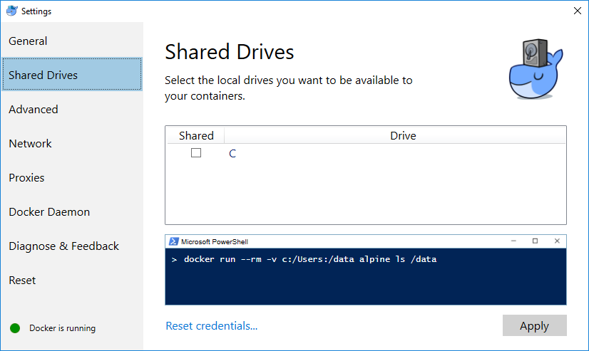

Quickstart¶
Introduction¶
It’s a giant pain to build everything yourself. The quickest way to start using PDAL is to leverage builds that were constructed by the PDAL development team using Docker. Docker is a containerization technology that allows you to run pre-built software in a way that is isolated from your system. Think of it like a binary that doesn’t depend on your operating system’s configuration to be able to run.
This exercise will print the first point of an ASPRS LAS file. It will utilize the PDAL command line application to inspect the file.
Note
While Docker is convenient, it is not for everyone. You can also obtain the software by installing a Linux package from Download or compiling it yourself from Compilation.
Docker is not required to use PDAL, and there are packages available on Linux (Debian, RPM) and OSX (Homebrew). See Download to obtain them. If you are a developer looking to leverage PDAL, you will need access to the library in your environment, but this quick start document is for those looking to quickly interact with data using PDAL’s command line applications and Pipeline.
If you need to compile your own copy of PDAL, see Compilation for more details.
Install Docker¶
Docker starting documentation can be found at the following links. Read through them a bit for your platform so you have an idea what to expect.
Note
We will assume you are running on Windows, but the same commands should work in OSX or Linux too – though definition of file paths might provide a significant difference.
Enable Docker access to your machine¶
In order for Docker to be able to interact with data on your machine, you must make sure to tell it to be able to read your drive(s). Right-click on the little Docker whale icon in you System Tray, choose Settings, and click the Shared box by your C drive:
Run Docker Quickstart Terminal¶
Docker is most easily accessed using a terminal window that it configures with environment variables and such. Run PowerShell or cmd.exe and issue a simple info command to verify that things are operating correctly:
docker info

Obtain PDAL Image¶
A PDAL image based on the latest release, including all recent patches, is pushed to Docker Hub with every code change on the PDAL maintenance branch (find out more about that at here). We need to pull it locally so we can use it to run PDAL commands. Once it is pulled, we don’t have to pull it again unless we want to refresh it for whatever reason.
docker pull pdal/pdal:1.5
Note
Other PDAL versions are provided at the same Docker Hub location,
with an expected tag name (ie pdal/pdal:1.5, or pdal/pdal:1.x) for
major PDAL versions. The PDAL Docker hub location at
https://hub.docker.com/u/pdal/ has images and more information
on this topic.
Fetch Sample Data¶
We need some sample data to play with, so we’re going to download
the autzen.laz file to your C:/Users/hobu/Downloads fold.
Inside your terminal, issue the following command:
explorer.exe http://www.liblas.org/samples/autzen/autzen.laz
cd C:/Users/hobu/Downloads
copy autzen.laz ..
Print the first point¶
docker run -v /c/Users/hobu:/data pdal/pdal:1.5 pdal info /data/autzen.laz -p 0
Here’s a summary of what’s going on with that command invocation
docker: We are running PDAL within the context of docker, so all of our commands will start with thedockercommand.run: Tells docker we’re going to run an image-v /c/Users/hobu:/data: Maps our home directory to a directory called/datainside the container.See also
The Docker Volume document describes mounting volumes in more detail.
pdal/pdal:1.5: This is the Docker image we are going to run. We fetched it with the command above. If it were not already fetched, Docker would attempt to fetch it when we run this command.pdal: We’re finally going to run thepdalcommand :)info: We want to run info on the data/data/autzen.laz: Thepdalcommand is now running in the context of our container, which we mounted a/datadirectory in with the volume mount operation in Step #3. Ourautzen.lazfile resides there.

What’s next?¶
- Visit Applications to find out how to utilize PDAL applications to process data on the command line yourself.
- Visit Development to learn how to embed and use PDAL in your own applications.
- Readers lists the formats that PDAL can read, Filters lists the kinds of operations you can do with PDAL, and Writers lists the formats PDAL can write.
- Tutorials contains a number of walk-through tutorials for achieving many tasks with PDAL.
- The PDAL workshop contains numerous hands-on examples with screenshots and example data of how to use PDAL Applications to tackle point cloud data processing tasks.
- Python describes how PDAL embeds and extends Python and how you can leverage these capabilities in your own programs.
See also
Community is a good source to reach out to when you’re stuck.